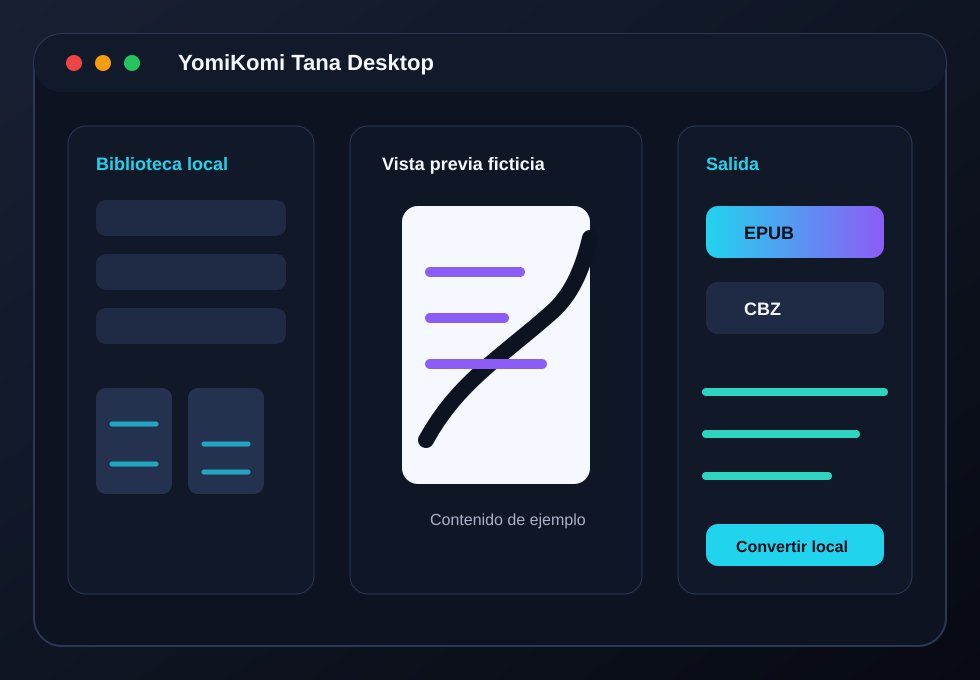

Conversión local
Procesa carpetas, imágenes y archivos comprimidos desde tu equipo, sin subir contenido a internet.
Desktop freeware para Windows
Convertidor freeware de manga, cómics y webtoons para lectura digital.
Prepara tus archivos locales para Kindle, Kobo, tablets y lectores compatibles con EPUB o CBZ. La versión de escritorio procesa todo en tu equipo y la versión móvil está planeada para usuarios sin computadora.

Estado del proyecto
YomiKomi Tana se distribuye como freeware. Es gratuito para uso personal, pero no es software open source por ahora. El código fuente no se distribuye públicamente; sí se aceptan reportes, sugerencias, pruebas de compatibilidad y mejoras de documentación pública.
Edición disponible
Aplicación de escritorio para Windows enfocada en convertir bibliotecas locales de manga, cómics y webtoons. Está pensada para uso personal con Kindle, Kobo, tablets, lectores EPUB y organización de archivos.
Procesa carpetas, imágenes y archivos comprimidos desde tu equipo, sin subir contenido a internet.
Exporta tomos a EPUB o CBZ según el dispositivo o aplicación de lectura que uses.
La app no incluye manga, cómics, webtoons ni ningún contenido protegido por derechos de autor.
Planeada
La versión móvil está en desarrollo y todavía no tiene release pública. Está pensada para usuarios que no tienen computadora y quieren preparar o leer contenido local directamente desde el teléfono.
No hay fecha de lanzamiento ni disponibilidad en tiendas de aplicaciones por ahora.
Funciones principales
Salida adecuada para lectores compatibles con EPUB y bibliotecas personales.
Formato práctico para visores de cómics, tablets y organización por tomos.
Recorte de márgenes para aprovechar mejor la pantalla de lectura.
Separación de escaneos horizontales en páginas más cómodas.
Orden de lectura pensado para manga cuando el formato lo permite.
Ajustes orientados a Kindle, Kobo, tablets y pantallas móviles.
Los archivos se procesan en tu equipo, sin subida a servidores externos.
Preparación de carpetas, capítulos, portadas y archivos de salida.
Privacidad
YomiKomi Tana procesa mangas, cómics, webtoons e imágenes localmente. No sube archivos a servidores, no vende información y no incluye telemetría en la versión actual.
Si en el futuro se agregan funciones online o telemetría, deberán documentarse antes de su publicación para que el usuario sepa qué datos se usan y con qué finalidad.
Aviso legal
YomiKomi Tana no incluye, vende ni distribuye manga, cómics, webtoons ni ningún contenido protegido por derechos de autor. La aplicación solo procesa archivos locales proporcionados por el usuario.
El usuario es responsable de usar contenido propio, libre de derechos o autorizado.
Descargas
Usa la página oficial de GitHub Releases para obtener instaladores o paquetes publicados por el autor. No se recomienda descargar copias republicadas por terceros.
Windows SmartScreen puede mostrar advertencias en apps nuevas o sin firma digital.
Seguridad
Algunas versiones de Windows pueden mostrar una advertencia de SmartScreen porque la aplicación aún no está firmada digitalmente o tiene pocas descargas. Descarga solo desde el repositorio oficial y verifica el hash SHA-256 publicado en cada release.